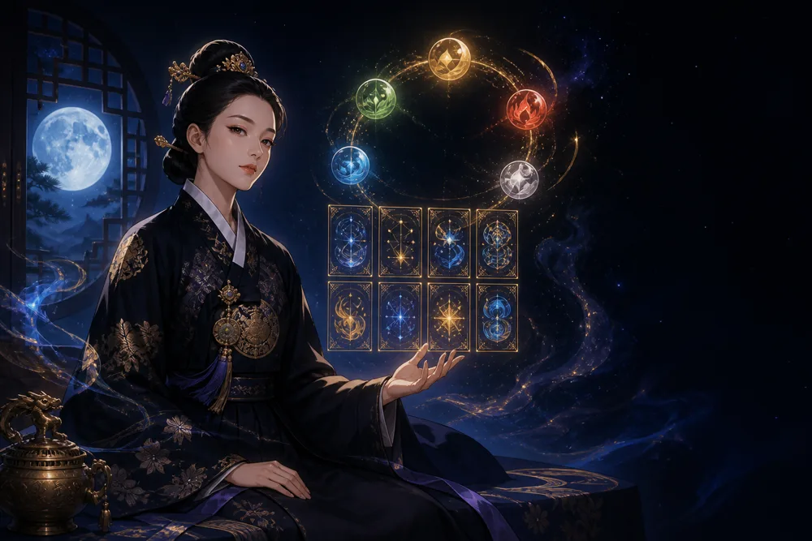

乙未 을미일주 — 뙤약볕 들판에 뻗은 쑥덩굴
을미일주 한눈에 보기
을미일주란 태어난 날의 간지가 乙未인 사람을 말합니다. 위 글자 乙(을)이 나 자신이고, 아래 글자 未(미)는 배우자가 앉는 자리입니다. 60갑자 가운데 32번째라 같은 일주를 가진 사람은 대략 예순 명 중 한 명꼴입니다.
뙤약볕에 달궈진 마른 흙 위로 덩굴이 뻗어 나가는 풍경입니다. 여린 풀이 흙을 다스리니 앉은자리가 곧 내 손으로 일구는 밭이고 일지 편재는 그 밭에서 나는 소득이 고정되기보다 활동하는 만큼 늘고 준다는 뜻입니다. 십이운성 양은 누군가의 보살핌 속에 길러지는 자리라 성품이 온화하고 주변의 도움을 자연스럽게 끌어옵니다. 미토는 한여름 끝자락의 흙이라 열기를 품고 있고 그 위의 을목은 목마름을 견디며 자라는 법을 일찍 배웁니다. 힘든 티를 잘 내지 않아 늘 여유로워 보인다는 말을 듣습니다. 마른땅에서도 살아남는 쑥처럼 생활력이 질기고 사람 좋은 인상을 함께 갖춘 조합입니다. 다만 흙이 메말라 있어 스스로 물을 챙기지 않으면 남 챙기다 제 몫을 놓치기 쉽습니다.
천간 하나만 떼어 본 성격·일·재물 풀이는 을목 일간 페이지에 있습니다.
뙤약볕 들판에 뻗은 쑥덩굴 — 을미일주가 드러나는 장면
주말 플리마켓에 손수 만든 천 가방을 들고 나갑니다. 가격표보다 손님과 나누는 이야기가 길어져 옆 가게 사람까지 이 자리에 모여듭니다. 단골 할머니가 깎아 달라고 하면 웃으며 덤을 하나 더 얹어 줍니다. 옆자리 청년이 처음 장사를 나왔다고 하면 진열하는 요령까지 알려 줍니다. 저녁에 수익을 세어 보면 매출은 괜찮은데 재료비를 빼면 남는 게 적어 스스로도 웃음이 나옵니다. 그래도 다음 장터 날짜를 먼저 확인합니다. 사람이 남는 장사라는 말을 이 사람만큼 실감하는 경우도 드뭅니다.
을미일주 여자와 남자
을미일주 여자
배우자 자리의 흙은 남편 별을 길러 내는 밭입니다. 양의 순한 기운이 더해져 남편을 보살피고 가정의 분위기를 따뜻하게 만드는 역할을 기꺼이 맡습니다. 헌신이 자연스러운 만큼 내 시간과 내 돈이 사라지는 걸 늦게 알아차리니 부부 사이에도 각자의 몫을 정해 두는 것이 좋습니다.
을미일주 남자
아내 별인 흙이 배우자 자리에 들어 있어 가정적이고 살림에 밝은 여성과 인연이 닿습니다. 을목 특유의 다정함과 양의 온화함이 겹쳐 아내를 편하게 해 주는 남편이 됩니다. 편재라 결혼 뒤에도 바깥 모임과 인맥이 넓은데 그 시간이 집을 비우는 이유가 되지 않도록 조율하는 것이 관건입니다.
남녀가 갈리는 근거는 십성입니다. 여자는 관성(官星), 남자는 재성(財星)을 배우자로 읽습니다.
일지 미(未) — 배우자 자리
일지가 미토인 사람은 배우자 자리에 마른 흙을 둡니다. 겉으로 순하지만 안에서는 고집이 단단합니다. 져 주는 것처럼 보이는데 결론은 바뀌지 않습니다.
묻지 않아도 챙겨주는 상대를 만나야 덜 지칩니다.
상대의 사주와 맞춰 보려면 궁합에서 두 사람의 생년월일을 함께 넣어 보세요.
을미일주의 일과 재물
사람을 편하게 하는 재주가 매출로 이어지는 조합입니다. 식당, 공방, 소매점, 돌봄 서비스처럼 손님과 얼굴을 맞대고 단골을 만드는 일에서 강합니다. 사람을 챙기는 성정이 그대로 신뢰가 되어 입소문으로 손님이 늘어납니다. 양의 기운 덕분에 윗사람이나 선배의 도움을 받아 자리를 잡는 경우가 많습니다. 다만 인심이 후해 원가 계산이 느슨해지기 쉬우니 가격 결정은 숫자에 밝은 사람과 함께 하는 편이 이익을 지킵니다.
을미일주가 조심할 것
부탁을 거절하지 못해 일정과 지갑이 동시에 빠듯해지는 경우가 많습니다. 누가 무언가를 부탁하면 바로 답하지 말고 하루 뒤에 알려 주겠다고 말하는 문장 하나를 입에 붙여 두세요. 그 하루 동안 내 일정과 지갑을 먼저 들여다보면 기꺼이 도울 일과 무리한 일이 저절로 갈립니다.
십이운성 양과 일지 십성 편재
십이운성 양 — 태어나기 전 길러지는 단계입니다. 보호받으며 준비하는 시기라 기질이 온화합니다.
일지 십성 편재 — 미(未) 안에서 가장 힘이 센 기를 내 일간 을과 대조한 결과입니다. 내가 통제하는 오행 중 음양이 같은 글자라는 뜻입니다.
을미일주와 인연이 닿는 띠
일지 미와 한 덩어리로 묶이는 삼합은 양, 돼지, 토끼띠, 짝을 이루는 육합은 말띠입니다. 정면으로 마주 보는 충은 소띠인데 못 만날 사이가 아니라 끌림과 마찰이 함께 큰 사이로 읽습니다.
자주 묻는 질문
을미일주는 어떤 성격인가요?
바위를 감아 오르는 덩굴에 비유되는 을목 일간이 미토 위에 앉은 일주입니다. 뙤약볕에 달궈진 마른 흙 위로 덩굴이 뻗어 나가는 풍경입니다. 여린 풀이 흙을 다스리니 앉은자리가 곧 내 손으로 일구는 밭이고 일지 편재는 그 밭에서 나는 소득이 고정되기보다 활동하는 만큼 늘고 준다는 뜻입니다.
을미일주는 여자와 남자가 다른가요?
기본 성격은 같고 배우자를 보는 글자가 갈립니다. 여자는 관성, 남자는 재성을 배우자로 읽습니다. 배우자 자리의 흙은 남편 별을 길러 내는 밭입니다. 아내 별인 흙이 배우자 자리에 들어 있어 가정적이고 살림에 밝은 여성과 인연이 닿습니다.
내 일주는 어떻게 확인하나요?
태어난 날의 간지가 일주입니다. 생년월일을 사주팔자 만세력에 넣으면 여덟 글자 가운데 세 번째 기둥으로 나옵니다. 그 두 글자가 乙未이면 을미일주입니다. 날짜 경계는 자정 기준이며 시주만 진태양시로 보정합니다.
충인 소띠와는 안 맞나요?
충은 안 맞는다는 뜻이 아니라 부딪힌다는 뜻입니다. 소띠는 내 일지 미와 정면으로 마주 보는 자리라 끌리는 힘도 세고 마찰도 잦습니다. 실제 궁합은 일지 하나가 아니라 사주 여덟 글자 전체의 균형으로 봅니다.